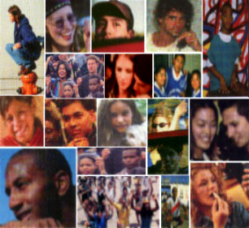

SIJ OPS-COLOMBIA
FINANCIADO POR: OPS-W.K.KELLOGG
Ver en 800x600 pix. y en pantalla completa
Convencid@s de la necesidad e importancia de posicionar y consolidar la labor con, por y para la juventud colombiana; el Programa de Promocion de la Salud Integral del Adolescente en Colombia; presenta este site web que provee de información amplia, confiable, diversa y clasificada respecto a l@s adolescentes y jovenes.
Contamos con sus aportes.


Septiembre/15/2000

D&D PRODUCCIONES